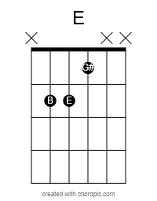
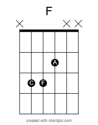

Before we start playing, this short lesson will help to build a solid general foundation for your musical journey.
Guitar is a uniquely visual and auditory instrument. You’ll learn patterns by seeing shapes on the fretboard and hearing how they connect. That dual nature is powerful — and we’ll lean into it every step of the way.
This Lesson Covers:
The Guitar Mindset : Using your Ears and Eyes Together
Picking: Explore Picking Techniques
Fretting: Explore Fretting Techniques
Rhythm: Counting and the Right Hand
0.1 — Guitar Mindset: Why the Guitar is Unique
The guitar is one of the most visual instruments in music. Unlike the piano — where every chord shape is unique — the guitar lets you use the same movable shapes up and down the neck to create chords in any key.
For example, here’s an E major chord (a triad made of the notes E, G♯, and B):

If we move that same shape up one fret (and mute the open strings), we now have an F major chord — F, A, C. Same shape, just one fret higher:

This works because guitar is laid out like six mini-pianos stacked vertically. While a piano lays out notes in a straight horizontal line (like a single string), the guitar’s tuning and fret layout let you reuse patterns across keys.
Later on (in Lesson 2: Power Chords & Moveable Shapes), we’ll go deeper into how to use this principle to your advantage — especially when playing barre chords and full scales.
Shapes vs. Sound
Many guitarists fixate on shapes — and while that’s powerful, it’s only half the battle. Every chord you learn has a distinct emotional quality. The shape helps you play it. Your ears help you internalize it.
I challenge you: whenever you learn a new chord shape, don’t just memorize it — listen to it. What does E major feel like to you? Bright? Bold? Hopeful? Learning guitar is as much about training your ears as your fingers.
Ask yourself, where does this note take me next?
Key takeaway: The guitar is a pattern-based, moveable-shape instrument. But the real power comes from combining what you see with what you hear.
0.2 — Picking: How You Speak on the Guitar
Guitar is more than just where you put your fingers — it’s how you hit the strings that creates your voice. Your picking style shapes your tone, feel, and groove. Whether you use a pick, your fingers, or both, this is how you "speak" on the instrument.
Let’s explore the two most common paths: picking with a plectrum, and fingerpicking with your hands.
The Pick (Plectrum)
The pick is often where guitarists begin — and for good reason. It’s fast, clear, and powerful. From blistering metal solos to delicate country runs, the pick has shaped nearly every modern genre.
Notable Pick Players:
Jimi Hendrix
Eddie Van Halen
B.B. King
George Harrison
Pros of Using a Pick:
Versatile: Used in nearly every genre, from rock to country.
Precision: Easier to isolate strings and focus on technique.
Volume: Produces a loud, crisp tone — great for hearing mistakes clearly.
Speed: Essential for fast runs, lead playing, and tight rhythms.
Cons of Using a Pick:
Limited dynamics: Softer expression can be harder to control.
Easy to lose: You will lose picks. It’s part of the journey.
String skipping: Jumping between non-adjacent strings takes practice.
Less natural in some styles: Like classical, traditional folk, or fingerstyle blues.
Here’s a great video on how to hold and use a pick correctly:
Fingerpicking
Fingerpicking takes things in a different direction. It’s more intimate, more expressive, and infinitely flexible. While it’s a bit more complex to learn at first, it opens up a world of tonal and textural possibilities.
From classical legends to modern folk heroes, here are some artists who built entire styles from their fingertips:
Wes Montgomery – thumb-only jazz phrasing
Tommy Emmanuel – full-on acoustic wizardry
Elizabeth Cotten – self-taught, upside-down folk magic
Dynamic control: Easily play softer or louder with subtle nuance.
Independence: Develops strong coordination between picking fingers.
Stylistic depth: Classical, jazz, blues, folk — all thrive here.
Cons of Fingerpicking:
Steeper learning curve: More fingers = more coordination required.
Nails or no nails? Some techniques depend on finger length or nail maintenance.
Less ideal for certain styles: Rock and punk are generally pick-based.
Here’s a solid video to get started with fingerpicking technique:
Main Takeaway:
There’s no wrong way to start. Pick one style and get playing — you can always explore the other later. What matters most is building your voice. Whether that’s with a pick, your fingers, or both, the right technique is the one that meets your goals and feels good in your hands.
0.3 — Fretting: Getting Comfortable and Clean
Good fretting technique is the foundation of clean, accurate playing. Whether you're playing chords or melodies, how you press the strings matters — and so does how you treat your hands.
Key Concepts:
Use the very tips of your fingers — not the pads. This keeps your notes clean and prevents muting nearby strings.
Keep your thumb behind the neck, roughly aligned with your middle finger. This gives you strength and reach.
Curl your fingers naturally toward the fretboard. Let them drop down, not lay flat.
Maintain a straight wrist. Avoid bending or twisting your wrist at uncomfortable angles.
Some pain in your fingertips is normal when you’re starting — you’re building calluses. But pain in your wrist or hand is not normal. Take breaks and adjust your posture if it feels off.
Helpful Videos:
Main Takeaway: Keep your wrist straight, arm relaxed, and fingers curled into the fretboard. Let your thumb move as needed to keep your fretting hand comfortable and in control.
0.4 — Rhythm: The Most Important Skill You’ll Ever Build
Rhythm is the foundation of every great guitarist. Before you learn flashy solos or complex chords, you need to understand one thing: timing. Rhythm is what makes music feel alive — and your right hand is your metronome.
Understanding 4/4 Time
Most music you’ll hear — especially rock, pop, funk, and hip-hop — is in 4/4 time. That means each measure (or bar) has four beats, and each beat is worth a quarter note.
Let’s break down the basic note and rest durations you'll encounter in 4/4:
Note Type
Duration (Beats)
Counting
Rest Symbol
Whole Note (𝅝)
4
1
𝄻
Half Note (𝅗𝅥)
2
1, 3
𝄼
Quarter Note (♩)
1
1 2 3 4
𝄽
Eighth Note (♪)
1/2
1 & 2 & 3 & 4 &
𝄾
Sixteenth Note (𝅘𝅥𝅯)
1/4
1 e & a 2 e & a 3 e & a 4 e & a
𝄿
As you can see, the more you divide the beat, the faster the rhythm. Each note has a matching rest — silence is just as important as sound when it comes to groove.
Use a Metronome — Always
A metronome keeps steady time and teaches you to play in sync with the beat. Start slow, and increase speed only once you're locked in.
Strumming patterns are useful, but they’re just surface-level shortcuts. The real goal is to understand how your hand relates to the beat. You strum on beats, play between them, or leave space with rests. This is how pros "comp" — rhythmically supporting a song with feel, not formulas.
Right-Hand Rhythm Exercise (Muted Strings with Counting)
This drill helps you internalize timing. You’ll mute the strings and focus only on your strumming hand and the beat.
Lightly rest your fretting hand on all six strings to mute them.
Set your metronome to 60 BPM.
Level 1 – Quarter Notes: Strum down on every beat. Count: 1 2 3 4
Level 2 – Eighth Notes: Strum down-up on each beat. Count: 1 & 2 & 3 & 4 &
Level 3 – Sixteenth Notes (challenge): Down-up-down-up evenly across each beat. Count: 1 e & a 2 e & a 3 e & a 4 e & a
Level 4 – Rest Integration: Try patterns like: Down – Rest – Down-Up – Rest. Always keep your hand moving in time.
Bonus: Dynamic Control
Once you feel confident keeping time, try adding dynamics — playing at different volumes while staying perfectly in rhythm. This builds control and musical awareness.
Try this variation:
Set your metronome to 60 BPM.
Strum muted strings using quarter notes (1 2 3 4).
Alternate between loud and soft strums: LOUD — soft — LOUD — soft
Try full patterns like: soft — soft — LOUD — soft or LOUD — LOUD — soft — soft
The challenge is to stay in perfect time no matter how hard or gently you play. This is where groove and expression really start to come alive.
The goal here isn't musicality — it's control. This is your internal clock workout.
Main Takeaway: Master rhythm by understanding beat division, listening to the space between notes, and training your right hand to move with purpose — not just patterns.